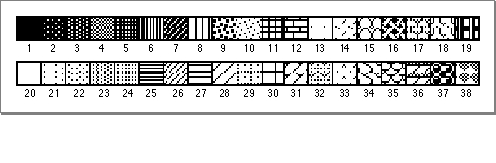

GetIndPattern
To get a pattern stored in a pattern list ('PAT#') resource, you can use theGetIndPatternprocedure.PROCEDURE GetIndPattern (VAR thePattern:�Pattern; patListID: Integer; index: Integer);
thePattern
APatternrecord.patListID- The resource ID for a resource of type
'PAT#'.index- The index number for the desired pattern within the pattern list (
'PAT#') resource.DESCRIPTION
In the parameterthePattern, theGetIndPatternprocedure returns aPatternrecord for a pattern stored in a pattern list ('PAT#') resource. Specify the resource ID for a pattern list ('PAT#') resource in thepatListIDparameter. In theindexparameter, specify the index number to a particular pattern stored in that resource. The index number can range from 1 to the number of patterns in the pattern list resource. TheGetIndPatternprocedure calls the following Resource Manager function with these parameters:GetResource('PAT ', patListID);There is a pattern list resource in the System file that contains the standard Macintosh patterns used by MacPaint. Figure 3-28 shows these standard patterns. The resource ID, and the constant you can use to represent it, areCONST sysPatListID = 0;Figure 3-28 Standard patterns
SPECIAL CONSIDERATIONS
TheGetIndPatternprocedure may move or purge memory blocks in the application heap. Your application should not call this procedure at interrupt time.SEE ALSO
The pattern list resource is described on page 3-137; thePatternrecord is described on page 3-36. See the chapter "Resource Manager" in Inside Macintosh: More Macintosh Toolbox for more information about resources, the Resource Manager, and theGetResourcefunction.